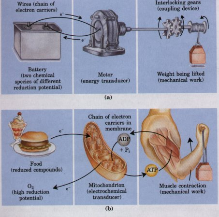
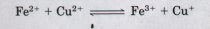
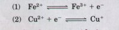
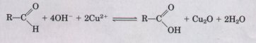
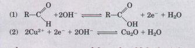
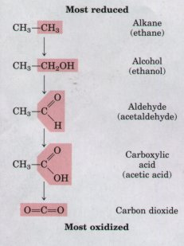

The transfer of phosphate groups is one of the central features of metabolism. Metabolic electron transfer reactions are also of crucial importance. These oxidation-reduction reactions involve the loss of electrons by one chemical species, which is thereby oxidized, and the gain by another, which is reduced. The flow of electrons in oxidationreduction reactions is responsible, directly or indirectly, for all of the work done by living organisms. In nonphotosynthetic organisms, the source of electrons is reduced compounds (food); in photosynthetic organisms, the initial electron donor is a chemical species excited by the absorption of light. The path of electron flow in metabolism is complex. Electrons move from various metabolic intermediates to specialized electron carriers in enzyme-catalyzed reactions. Those carriers in turn donate electrons to acceptors with higher electron affinities, with the release of energy. Cells contain a variety of molecular energy transducers, which convert the energy of electron flow into useful work.
We begin our discussion with a description of the general types of metabolic reactions that involve electron transfers. After considering the theoretical and experimental basis for measuring energy changes in oxidation reactions in terms of electromotive force, we will discuss the relationship between this force, expressed in volts, and the freeenergy change, expressed in joules. We conclude by introducing the structures and oxidation-reduction chemistry of the most common of the specialized electron carriers, which we shall meet repeatedly in later chapters.
| The conversion of electron flow to
biological work requires molecular transducers, analogous
to the electric motors that convert electron flow through
macroscopic circuits into mechanical motion. The analogy
between a circuit connecting a battery with an electric
motor and the submicroscopic electron circuits in cells
is instructive. In the macroscopic circuit (Fig. 13-13a), the source of electrons is a battery containing two chemical species that differ in affinity for electrons. The electrical wires provide a pathway for electron flow from the chemical species at one pole of the battery, through the motor, to the chemical species at the other pole of the battery. Because the two chemical species differ in their affinity for electrons, electrons flow spontaneously through the circuit, driven by a force proportional to the difference in electron afimity, the electromotive force. The electromotive force (typically a few volts) can accomplish work if an appropriate energy transducer such as a motor is placed in the circuit. The motor can be coupled to a variety of mechanical devices to accomplish work. |
 Figure 13-13 The analogy between macroscopic (a) and microscopic (b) electrical circuits. In both circuits, the energy of electron flow is harnessed to do work. |
In an analogous biological "circuit" (Fig. 13-13b), the source of electrons is a relatively reduced compound such as glucose. As glucose is enzymatically oxidized, electrons are released and flow spontaneously through a series of electron carrier intermediates to another chemical species with a high affinity for electrons, such as O2. Electron flow is spontaneous and exergonic, because O2 has a higher affinity for electrons than do the intermediates that donate electrons. The resulting electromotive force provides energy to molecular transducers that do biological work. In the mitochondrion, for example, membrane-bound transducers couple electron flow to the production of a transmembrane pH difference, accomplishing osmotic and electrical work. The proton gradient thus formed has potential emeroy, sometimes called protonmotive force by analogy with electromotive force. Another molecular transducer in the mitochondrial membrane uses the proton-motive force to do chemical work: ATP is synthesized from ADP and Pi as protons flow spontaneously across the membrane. Similarly, membrane-localized transducers in E. coli convert electromotive to protonmotive force, which is then used to power flagellar motion.
The principles of electrochemistry that govern energy changes in the circuit with a motor and battery apply with equal validity to the microscopic processes accompanying electron flow in living cells. We turn now to a review of those principles.
Although oxidation and reduction must occur together, it is convenient when describing electron transfers to consider the two halves of an oxidation-reduction reaction separately. For example, the oxidation of ferrous ion by cupric ion:

can be described in terms of two half reactions:

The electron-donating molecule in an oxidation-reduction
reaction is called the reducing agent or reductant; the
electron-accepting molecule is the oxidizing agent or oxidant. A
given agent, such as an iron cation in the ferrous (Fe2+) and the
ferric (Fe3+ ) state, functions as a conjugate reductant-oxidant
pair (redox pair), just as an acid and corresponding base
function as a conjugate acid-base pair. Recall from Chapter 4
that in acid-base reactions we can write the general equation:
proton donor  H+ + proton acceptor. In redox reactions we can
write a similar general equation: electron donor e- + electron
acceptor. In the reversible half reaction (1) above, Fe2+ is the
electron donor and Fe3+ is the electron acceptor; together, Fe2+
and Fe3+ constitute a conjugate redox pair.
H+ + proton acceptor. In redox reactions we can
write a similar general equation: electron donor e- + electron
acceptor. In the reversible half reaction (1) above, Fe2+ is the
electron donor and Fe3+ is the electron acceptor; together, Fe2+
and Fe3+ constitute a conjugate redox pair.
The electron transfers in oxidation-reduction reactions involving organic compounds are not fundamentally different from those that occur with inorganic species. In Chapter 11 we considered the oxidation of a reducing sugar (an aldehyde or ketone) by cupric ion (see Fig. 11-l0a):

This overall reaction can be expressed as two half reactions:

Because two electrons are removed from the aldehyde carbon, the second half reaction (the one-electron reduction of cupric to cuprous ion) must be doubled to balance the overall equation.
| Carbon occurs in living cells in ime
different oxidation states (Fig. 13-14). In the most
reduced compounds carbon atoms are rich in electrons and
in hydrogen, whereas in the more highly oxidized
compounds a carbon atom is bonded to more oxygen and to
less hydrogen. In the oxidation of ethane to ethanol
(Fig. 13-14), the compound does not lose a hydrogen but
one of the carbon atoms does; the hydrogen of the -OH
group is, of course, not bonded directly to carbon. In
the series of compounds shown in Figure 13-14, oxidation
of a carbon atom is synonymous with its dehydrogenation.
When a carbon atom shares an electron pair with another
atom such as oxygen, the sharing is unequal, in favor of
the more electronegative atom (oxygen). Thus oxidation
has the effect of removing electrons from the carbon
atom. Not all biological oxidation-reduction reactions
involve oxygen and carbon. For example, the conversion of
molecular nitrogen into ammonia, 6H+ + 6e- + N2 1. They may be transferred directly as electrons. For example, the Fe2+/Fe3+ redox pair can transfer an electron to the Cu+/Cu2+ redox pair: 2. Electrons may be transferred in the form of hydrogen atoms. Recall that a hydrogen atom consists of a proton (H+) and a single electron (e-). In this case we can write the general equation AH2 |
 Figure 13-14 The oxidation states of carbon. Each of the arrows indicates an oxidation reaction; all except the last reaction are oxidations brought about by dehydrogenation. |
where AH2 acts as the hydrogen (or electron) donor. AH2 and A together constitute a conjugate redox pair, which can reduce another compound B by transfer of hydrogen atoms:
AH2+B A + BH2
3. Electrons may be transferred from an electron donor to an acceptor in the form of a hydride ion ( :H-), which includes two electrons, as in the case of NAD-linked dehydrogenases described below.
4. Electron transfer also takes place when there is a direct combination of an organic reductant with oxygen, to give a product in which the oxygen is covalently incorporated, as in the oxidation of a hydrocarbon to an alcohol:
2 R-CH3 + O2  2 R-CH2-OH
2 R-CH2-OH
In this reaction the hydrocarbon is the electron donor and the oxygen atom is the electron acceptor.
All four types of electron transfer occur in cells. The neutral term reducing equivalent is commonly used to designate a single electron equivalent participating in an oxidation-reduction reaction, no matter whether this equivalent be in the form of an electron per se, a hydrogen atom, or a hydride ion, or whether the electron transfer takes place in a reaction with oxygen to yield an oxygenated product. Because biological fuel molecules usually undergo enzymatic dehydrogenation to lose two reducing equivalents at a time, and because each oxygen atom can accept two reducing equivalents, biochemists by convention refer to the unit of biological oxidations as two reducing equivalents passing from substrate to oxygen.